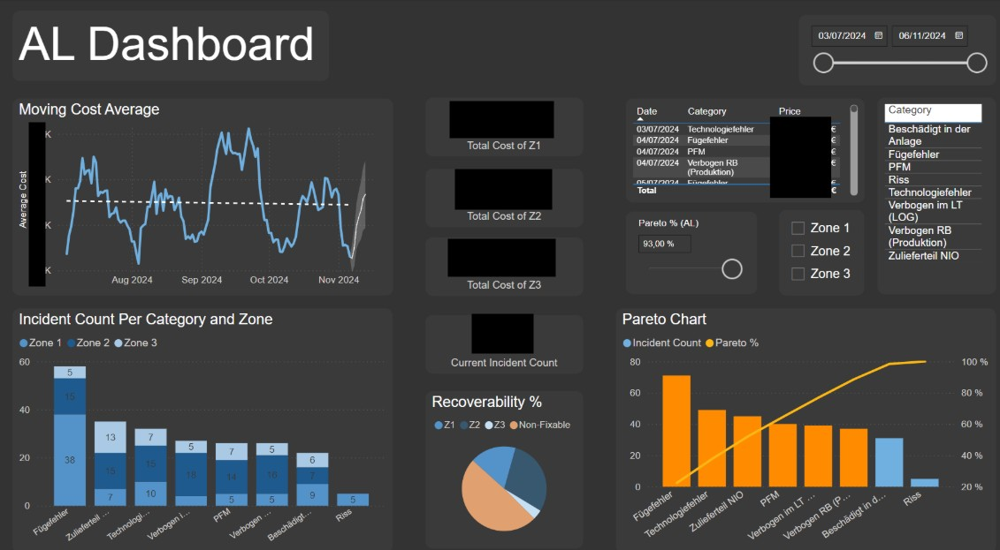
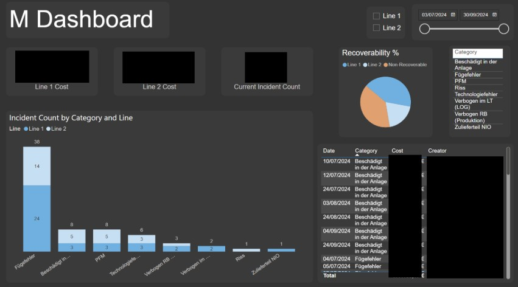

Power BI Dashboard System
for Production Scrap Visibility
Mercedes-Benz AG · Sindelfingen, Germany
The Challenge
Mercedes-Benz production lines generate significant material scrap across multiple production stages. Without real-time visibility into where and how scrap is being generated, prioritising corrective action is slow and reactive. The goal was to design a data system that could surface scrap patterns at scale and enable management to act on them.
Technical Approach
Working as part of a three-person team, I designed and developed a 4-tier Power BI dashboard system that connected to live production data and surfaced scrap metrics in a structured, hierarchical format, from plant-level down to individual production line.
Two key analytical methods were applied to the defect data:
- Moving averages — to smooth short-term variance and identify genuine trend directions in scrap generation over time
- Pareto weighting — to rank scrap sources by impact and identify the 20% of causes responsible for the majority of cost
The 4-tier structure allowed drill-down from executive summary to line-level detail, making the system useful to both board-level stakeholders and floor supervisors within the same platform.
The project was presented as a thesis-style defence to board-level stakeholders and placed first among competing project groups.


⚠ Note: Specific production line names, supplier data, and internal KPI values are confidential and have been omitted. Dashboard screenshots above are anonymised. Methodology and system architecture are described in full.
Outcomes
The project received a grade of 1.3 on the German academic scale and a letter of recommendation from Mercedes-Benz. The system architecture and Pareto-based prioritisation framework were validated by the engineering panel.